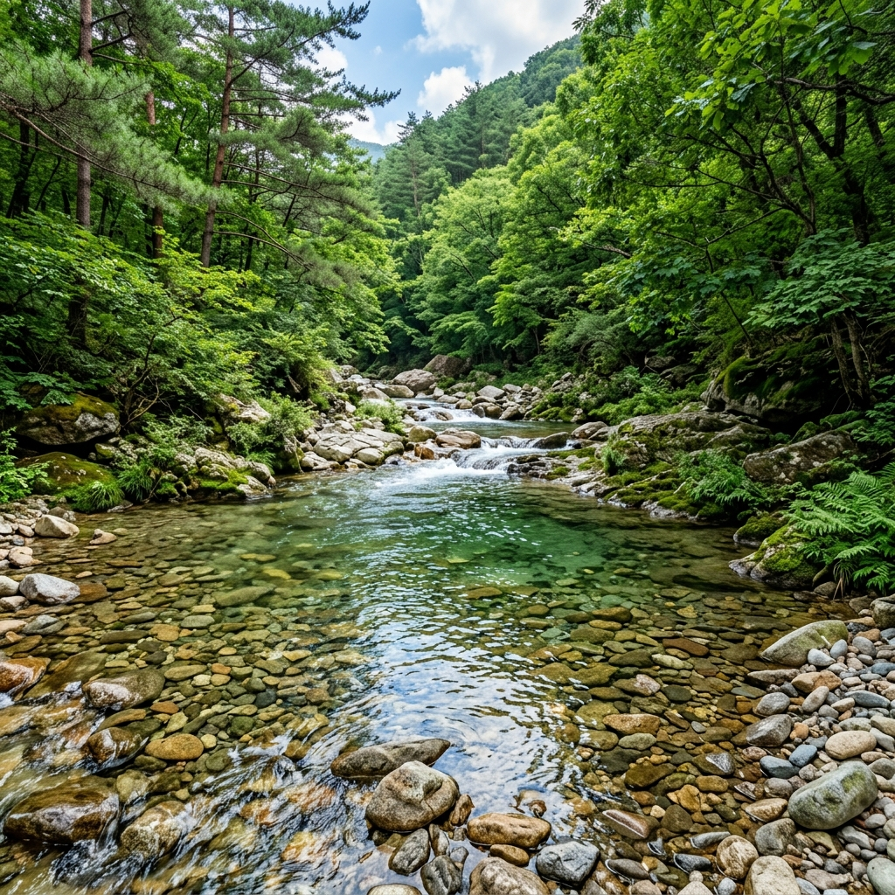
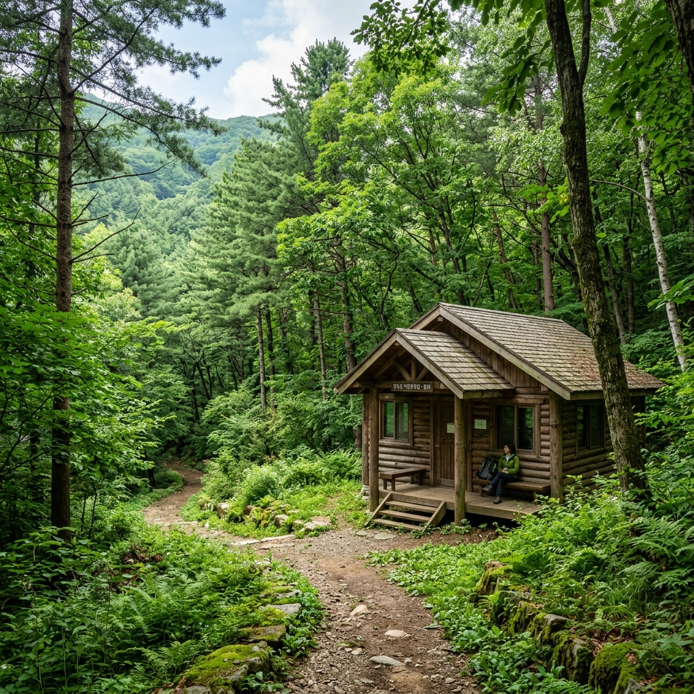
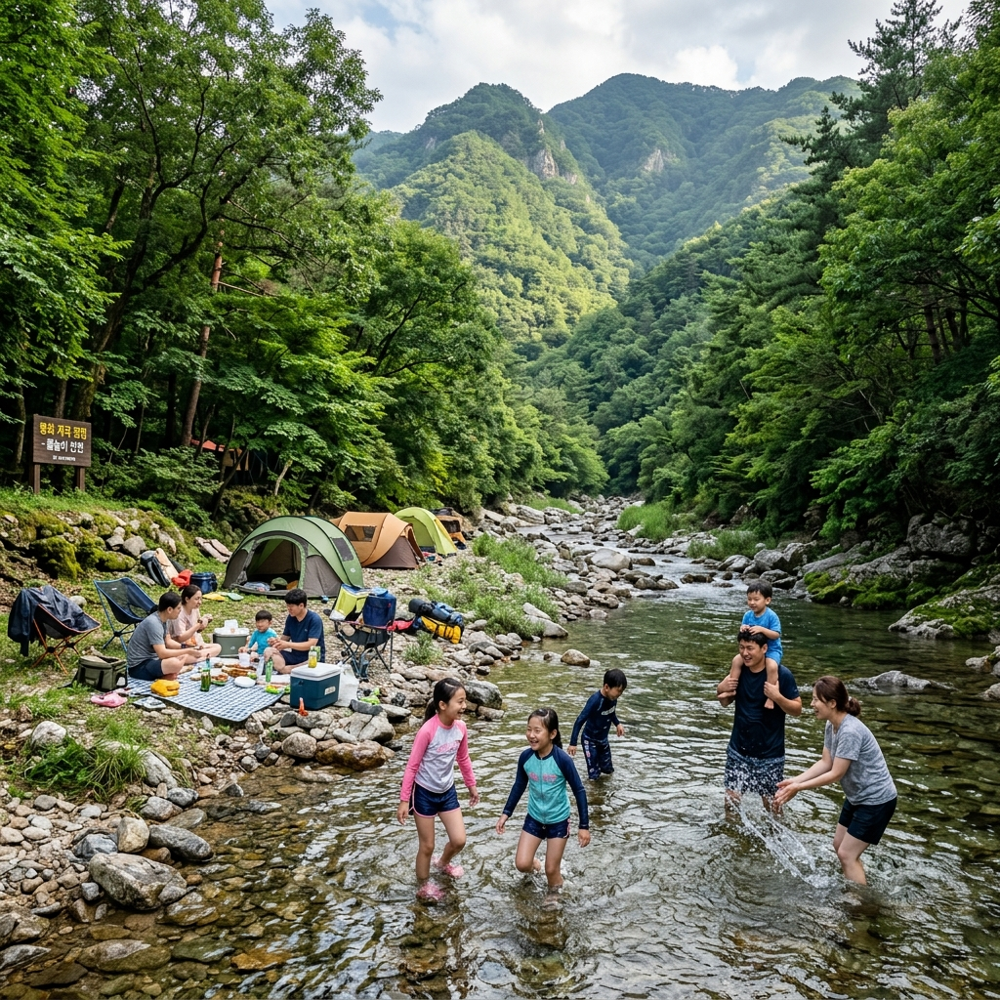

봉화 백천계곡 열목어 서식지와 청옥산 자연휴양림 예약, 여름 오지 피서 코스
경상북도 봉화군 소천면에 자리한 백천계곡은 청옥산(해발 1,277m) 자락에서 발원하는 청정 냉수성 계곡으로, 한여름에도 수온이 15℃ 안팎을 유지합니다. 이곳은 천연기념물 제74호 열목어가 실제로 서식하는 국내 최남단 서식지 중 하나로, 1~2급수의 수질을 자랑합니다. 화려한 인프라 대신 원시림과 맑은 계곡이 주는 청정한 자연 속에서 진짜 여름 오지 피서를 즐기고 싶다면, 봉화 백천계곡이 바로 그 해답입니다.
바로 옆에는 산림청이 운영하는 청옥산 자연휴양림이 있어 숲속의집 숙박과 야영이 가능합니다. 여기에 봉화 청량산·청량사 탐방, 은어축제까지 더하면 1박 2일로도 알찬 여름 여행이 완성됩니다.
| 구분 | 내용 |
|---|
| 위치 | 경북 봉화군 소천면 백천리 일대 (낙동강 상류 지류) |
| 계곡 특징 | 천연기념물 열목어 서식, 청옥산 발원 냉수성 1~2급수 계곡 |
| 여름 수온 | 15℃ 안팎 (삼복 더위에도 유지) |
| 인접 시설 | 청옥산 자연휴양림, 청량산·청량사, 봉화 읍내 |
| 서울 기준 | 약 2시간 30분~3시간 (중앙고속도로 이용) |
| 봉화↔영주 | 약 30분 |
| 봉화↔안동 | 약 45분 |
| 자연휴양림 예약 | 숲나들e (www.foresttrip.go.kr) |
01. 봉화 백천계곡이 숨은 피서지로 유명한 이유
경상북도 봉화군은 '한국의 마지막 오지'라는 별명이 붙을 만큼 개발의 손길이 닿지 않은 청정 지역입니다. 그럼에도 해마다 여름이면 전국 각지에서 피서객이 꾸준히 찾아드는 계곡이 있으니, 바로 소천면의 백천계곡입니다.
이 계곡이 피서지로 각별한 이유는 단순하지만 강력합니다. 한여름 한낮에도 발을 담그면 순간 시려울 정도로 차갑고, 바닥까지 훤히 보이는 에메랄드빛 투명한 물이 쉼 없이 흐르기 때문입니다. 청옥산 해발 1,000m 이상 고지에서 발원한 냉수가 원시림 그늘 아래를 흘러내려오는 구조라, 외부 기온이 35℃를 웃도는 삼복 더위에도 수온은 좀처럼 15℃를 넘지 않습니다.
수온 15℃라는 숫자를 실감하기 어려울 수 있는데, 냉장고 냉장실(4~6℃)보다는 따뜻하지만 실온(25~35℃)보다는 훨씬 낮은 온도입니다. 물에 발을 담그는 순간 '시원하다'는 감각을 지나 '차갑다'는 감각이 강하게 올 정도이며, 더위에 달아오른 몸을 식히는 데 이보다 더 효과적인 방법을 찾기 어렵습니다.
또 하나의 강점은 원시림에 가까운 울창한 숲입니다. 백천계곡 주변은 낙엽수와 침엽수가 어우러진 자연림이 계곡을 따라 길게 이어져 있어, 나무 그늘 아래에서 계곡 소리를 배경으로 낮잠을 자거나 독서를 즐기기에 더없이 좋은 환경입니다. 화려한 시설보다 자연 그 자체를 즐기고 싶은 분들, 사람이 많은 대형 관광지보다 조용하고 한적한 장소를 선호하는 분들에게 백천계곡은 특별한 의미를 갖는 피서지입니다.
수도권에서 멀고 대중적인 홍보가 적은 만큼 같은 경북권의 주왕산 계곡이나 울진 불영계곡에 비해 방문객 수가 상대적으로 적습니다. 이러한 한적함 자체가 또 하나의 매력이며, 봉화 백천계곡을 한 번 찾은 분들이 해마다 다시 찾아오는 이유이기도 합니다.
02. 봉화 가는 법과 백천계곡 찾아가는 법
봉화까지 가는 가장 빠른 방법은 승용차를 이용한 중앙고속도로 경유입니다. 서울 기준으로 중앙고속도로를 타고 풍기 IC 또는 영주 IC에서 나온 뒤, 봉화 방면 국도를 이용하면 됩니다. 전체 소요 시간은 교통 상황에 따라 약 2시간 30분~3시간이며, 여름 성수기 주말에는 고속도로 정체가 발생할 수 있으므로 오전 일찍 출발하시는 것이 좋습니다.
내비게이션 검색 시에는 '봉화 백천계곡' 또는 '경북 봉화군 소천면 백천리'를 입력하시면 됩니다. 청옥산 자연휴양림을 목적지로 설정해도 계곡 인근으로 안내가 됩니다. 단, 소천면으로 진입하는 일부 산길은 폭이 좁은 구간이 있어 대형 RV나 대형 SUV는 미리 경로를 확인하시길 권장합니다.
대중교통을 이용하는 경우에는 서울 청량리역에서 봉화행 무궁화호를 탄 뒤 봉화역 또는 임기역에서 하차하고, 군내버스나 택시를 이용해 소천면 방면으로 이동하는 경로가 일반적입니다. 다만 봉화 군내버스의 배차 간격이 길고 백천계곡까지 직접 연결되는 노선이 원활하지 않을 수 있어, 대중교통 이용 시에는 봉화군 교통 정보를 사전에 꼼꼼히 확인하시고 택시 또는 렌터카 병행을 검토하시는 것이 현실적입니다.
영주에서는 차로 약 30분, 안동에서는 약 45분 거리라, 이 도시들에서 출발하는 분들은 접근이 비교적 수월합니다. 대구·구미 방면에서 오시는 분들도 중앙고속도로를 이용하면 2시간 내외로 도착하실 수 있습니다.

봉화 백천계곡 에메랄드빛 맑은 계곡물과 자갈 바닥, 여름 오지 피서지의 청정함 / AI 제작 이미지
03. 열목어 — 천연기념물 제74호가 사는 청정 계곡
열목어(Brachymystax lenok)는 문화재청이 지정한 천연기념물 제74호로, 수온이 낮고 수질이 깨끗한 1~2급수 냉수성 계곡에만 서식하는 특별한 어류입니다. 연어과에 속하며, 시베리아·몽골·중국 동북부·한반도 등 냉대기후 지역에 분포하는 종입니다. 전 세계적으로도 서식지가 제한적이며, 우리나라에서는 강원도 평창·정선, 경북 봉화·울진 등 극히 일부 지역에서만 확인됩니다.
백천계곡은 이 열목어의 국내 최남단 서식지 중 하나로 알려져 있습니다. 경북 봉화라는 남쪽 지역에서도 열목어가 살 수 있는 이유는, 청옥산 고지에서 발원하는 냉수가 연중 15℃ 이하를 유지하기 때문입니다. 이 냉수 환경이 열목어가 살아갈 수 있는 거의 유일한 조건을 충족시켜 줍니다.
열목어는 성체 기준 몸길이가 30~60cm 이상 자라기도 하며, 옆구리에 붉은 점박이 무늬가 있어 '붉은 점 연어'라는 애칭으로도 불립니다. 계곡 물속에서 유영하는 모습을 조용히 들여다보면 가끔 그 자태를 확인할 수 있어, 계곡 탐방의 또 다른 즐거움이 됩니다.
단, 열목어는 천연기념물이므로 포획·채집은 물론 낚시도 엄격히 금지되어 있습니다. 관련 법령 위반 시 법적 처벌을 받을 수 있습니다. 관찰과 사진 촬영에 그치는 친환경 탐방을 꼭 실천해 주세요. 또한 계곡에 세제를 풀거나 음식물 쓰레기를 흘려보내는 행위는 열목어 서식 환경을 직접적으로 훼손하므로, 취사·세척 시에도 각별히 주의하시기 바랍니다.
04. 백천계곡 물놀이 구간과 여름 피서 포인트
백천계곡은 전체적으로 수심이 얕고 유속이 완만한 여울 구간이 많아, 어린아이를 동반한 가족 단위 방문객도 비교적 안전하게 물놀이를 즐길 수 있습니다. 단, 집중호우 이후에는 수위가 급격히 상승할 수 있으니 당일 기상 예보를 반드시 확인하고 출발하세요.
자갈 바닥 여울 구간은 수심이 허리 이하로 얕고 물색이 에메랄드빛으로 아름다워 피서 명소로 손꼽힙니다. 자갈이 잘 정돈된 구간에서는 물가에 자리를 잡고 발만 담근 채 쉬기에 좋고, 더 적극적인 물놀이를 원하신다면 수심이 좀 더 깊은 소(沼) 구간을 찾으시면 됩니다.
원시림 그늘 아래 계곡변도 인기 포인트입니다. 낙엽수들이 가지를 드리운 계곡변에서 돗자리를 펼치면 한낮에도 기온이 평지보다 훨씬 낮게 느껴집니다. 계곡 주변에 캠핑 가능한 구역이 있으며, 바로 옆 청옥산 자연휴양림 야영장을 베이스캠프로 삼아 활용하면 더욱 편리하게 즐길 수 있습니다.
피서 포인트를 간단히 정리하면 다음과 같습니다.
냉수 족욕 구간: 자갈 바닥 얕은 여울, 가족 물놀이에 안성맞춤
수영 가능 소(沼): 계곡 중류 일부 구간, 입수 전 수심 직접 확인 필수
그늘 휴식 구역: 원시림 아래 돗자리·그늘막 설치 가능, 오후 햇빛을 피하기 좋음
사진 명소: 에메랄드빛 물색이 가장 선명하게 나오는 오전 시간대를 추천합니다.

청옥산 자연휴양림 울창한 여름 숲과 쉼터, 봉화 오지 피서의 핵심 / AI 제작 이미지
05. 청옥산 자연휴양림 예약과 시설 안내
백천계곡 바로 인근에 위치한 청옥산 자연휴양림은 산림청이 운영하는 국립 자연휴양림입니다. 해발 1,277m의 청옥산 자락에 조성되어 있어 여름에도 서늘한 기온을 유지하며, 도심을 떠나 진정한 산림욕을 즐기고 싶은 분들에게 더없이 좋은 선택지입니다.
주요 시설로는 숲속의집(통나무집·산림휴양관), 야영장(텐트 사이트), 산림욕장, 계곡 산책로 등이 있습니다. 숲속의집은 소규모 가족 단위부터 중형 그룹까지 다양한 규모의 객실이 마련되어 있으며, 취사 가능 유형도 있어 직접 요리를 즐기실 수 있습니다. 야영장은 자연 속에서 텐트를 치고 하룻밤을 보낼 수 있는 구역으로, 계곡 소리를 들으며 숙박하는 낭만적인 경험을 선사합니다.
예약 방법은 산림청 숲나들e 홈페이지(www.foresttrip.go.kr)를 통한 온라인 예약이 기본입니다. 성수기인 7~8월에는 예약 경쟁이 매우 치열하므로, 희망 날짜 예약 오픈일(통상 이용일 기준 수개월 전) 오전 9시에 맞춰 접속하시거나, 취소표를 노리는 방법을 병행하시기 바랍니다. 예약에 성공하지 못한 경우 백천계곡 인근의 민박·펜션·글램핑장을 대안으로 검토해 보세요.
이용 시 유의 사항을 정리해 드립니다.
입장료 및 야영장 이용 요금은 연도별로 변경될 수 있으므로 예약 전 공식 홈페이지에서 반드시 확인하세요. 반려동물 동반 여부는 사전에 문의가 필요합니다. 취사 가능 구역과 불가 구역이 명확히 구분되어 있으니 안내 표지판을 꼭 확인하시기 바랍니다.
06. 봉화 청량산·청량사 연계 트레킹
봉화 여행에서 백천계곡과 함께 묶어 방문하기 좋은 곳이 바로 청량산과 청량사입니다. 청량산은 낙동강 상류 기슭에 솟아오른 명산으로, 기암절벽과 소나무 숲이 어우러진 절경으로 유명합니다. 봉화와 안동의 경계에 위치하며, 조선 시대 대학자 퇴계 이황 선생이 각별히 사랑하여 직접 이름을 붙인 봉우리와 정자 이름들이 곳곳에 남아 있습니다.
청량산 탐방로는 초보 등산객부터 숙련자까지 다양한 코스를 갖추고 있습니다. 그중에서도 청량사에서 선학봉을 거쳐 청량폭포로 이어지는 코스는 편도 약 2~3시간 소요로, 계곡 피서와 산행을 모두 즐길 수 있어 인기가 높습니다. 여름에는 울창한 숲이 그늘을 만들어 주어 다른 계절에 비해 오히려 쾌적하게 산행을 즐기실 수 있습니다.
청량사는 신라 시대에 창건된 천년고찰로, 가파른 기암절벽 위에 고즈넉하게 자리 잡은 독특한 입지가 인상적입니다. 사찰 경내에서 바라보는 낙동강 굽이치는 전망이 일품이며, 경내의 유리보전(보물)은 국내에서 유일하게 '유리보전'이라는 이름을 가진 건물로 역사 문화적 가치가 높습니다.
백천계곡에서 청량산 입구까지는 차량으로 약 30~40분 거리입니다. 1박 2일 일정의 경우, 첫날 백천계곡 물놀이와 청옥산 자연휴양림 숙박, 둘째 날 청량산 트레킹과 청량사 방문으로 코스를 구성하면 봉화의 자연과 문화를 알차게 담을 수 있습니다.
07. 봉화 특산물과 맛집 먹거리
봉화는 청정한 자연환경 덕분에 맛있는 특산물이 풍부한 지역입니다. 가장 대표적인 것이 봉화 사과입니다. 일교차가 큰 고지대에서 재배되어 당도가 높고 육질이 단단하며, '봉화 사과'라는 브랜드 자체가 전국적으로 품질을 인정받고 있습니다. 또한 봉화 고추는 매운맛과 단맛이 균형을 이룬 청결한 고추로 유명하며, 가을에는 전국 최고 품질 중 하나로 평가받는 봉화 송이버섯도 생산됩니다.
여름 방문 시 꼭 맛봐야 할 먹거리는 계곡 주변 식당에서 즐길 수 있는 민물고기 매운탕입니다. 봉화 계곡에서 자란 피라미·꺽지·메기 등을 넣어 칼칼하게 끓인 매운탕은 여름 피서의 마무리로 더없이 어울립니다. 한 가지 반드시 아셔야 할 점은, 열목어는 천연기념물이므로 어떤 식당에서도 메뉴로 올라올 수 없고 서빙 자체가 불법이라는 것입니다. 혹여 열목어를 식재료로 내세우는 업소가 있다면 이용하지 마시기 바랍니다.
봉화 읍내에는 한우 전문 식당도 여러 곳 운영 중입니다. 청정한 환경에서 자란 경북 한우는 특유의 진한 육향과 부드러운 육질로 인기가 있으며, 서울보다 합리적인 가격으로 즐길 수 있습니다. 또한 봉화 5일장(봉화장)은 매월 끝자리 4일·9일에 열리는 전통 시장으로, 현지 농산물·사과·고추·나물 등을 저렴하게 구매할 수 있는 좋은 기회입니다. 여행 일정이 장날과 맞는다면 꼭 들러 보시기 바랍니다.
08. 봉화 은어축제 — 7월 말~8월 초 예정
봉화에서 매년 여름 개최되는 대표 축제 중 하나가 봉화 은어축제입니다. 은어는 맑고 유속이 빠른 여울에 사는 냉수성 어류로, 수질이 좋은 봉화 일대 내성천 구간에서 자연 서식합니다. 은어는 '수박향이 난다'는 독특한 특성으로도 잘 알려져 있어 여름철 별미로 꼽힙니다.
축제 기간 동안에는 은어 맨손 잡기 체험, 은어 소금구이 시식, 은어 낚시 체험 등 다채로운 프로그램이 진행됩니다. 현지에서 갓 잡아 소금만 뿌려 구워 낸 은어 구이는 담백하고 청아한 향이 일품이며, 한 번 맛보면 쉽게 잊기 어렵습니다. 전통 민속놀이와 지역 공연 등 부대행사도 함께 열려 가족과 함께 즐기기에 좋습니다.
2026년 봉화 은어축제는 통상 7월 말~8월 초에 개최되지만, 구체적인 일정·장소·세부 프로그램은 연도마다 달라질 수 있습니다. 방문 전 봉화군 문화관광 공식 홈페이지 또는 봉화군청(054-679-6114)에 반드시 확인하시기 바랍니다. 축제 기간에는 숙박 수요가 급증하므로, 축제 시즌 방문 계획이라면 숙박 예약을 평소보다 훨씬 일찍 진행하세요.

봉화 백천계곡 주변 원시림과 여름 피서 풍경, 도심과 멀리 떨어진 청정 계곡 / AI 제작 이미지
09. 여름 계곡 피서 준비물과 안전 주의사항
봉화 백천계곡을 찾기 전에 꼭 챙겨야 할 준비물과 안전 수칙을 정리해 드립니다. 계곡 피서는 잘 즐기면 최고의 여름 피서가 되지만, 준비가 소홀하면 사고로 이어질 수 있으니 반드시 숙지해 두세요.
필수 준비물
아쿠아슈즈 또는 계곡 샌들: 계곡 바닥은 이끼 낀 돌이 많아 미끄럽습니다. 맨발은 부상 위험이 있으므로 미끄럼방지 바닥이 있는 수중 전용 신발을 반드시 착용하세요.
래시가드: 자외선 차단과 피부 보호를 위해 강력히 권장합니다. 계곡에도 자외선은 강합니다.
구명조끼: 특히 어린이를 동반한 경우 반드시 착용하도록 해 주세요.
워터프루프 자외선 차단제: 물에 들어가도 지속되는 제품을 선택하세요.
타월 및 여벌 옷: 차가운 계곡물에 금방 나와야 할 수도 있습니다. 체온 유지를 위해 여벌 옷을 준비하세요.
기본 구급약: 긁힘·타박상 대비 반창고, 소독약은 필수입니다.
충분한 식수와 간식: 계곡 주변에 편의점이 없는 구간이 있으므로 넉넉히 준비하세요.
안전 수칙
① 입수 전 스트레칭과 준비 운동을 반드시 하세요. 차가운 계곡물에 갑자기 뛰어들면 근육 경련(쥐)이 발생할 수 있습니다.
② 폭우 이후 24시간 이내에는 절대 입수하지 마세요. 상류 강수로 수위와 유속이 갑자기 급변할 수 있습니다.
③ 수심을 확인하지 않고 뛰어들거나 다이빙하는 행위는 목숨을 위협할 수 있으므로 절대 금지입니다.
④ 음주 후 입수는 판단력과 근력을 저하시켜 익사 사고로 이어질 수 있습니다.
⑤ 어린이는 절대 혼자 두지 마세요. 수심이 얕아 보여도 위험할 수 있으며 어른이 항상 옆에서 주시해야 합니다.
⑥ 쓰레기는 반드시 되가져가 주세요. 열목어 서식 생태계 보호를 위해 계곡에서의 환경 관리는 방문객 모두의 책임입니다.
(캠핑·야영 시 모기와 벌레 대비가 걱정되신다면, 여름 캠핑 모기·벌레 퇴치와 빠뜨리기 쉬운 준비물도 함께 참고해 보세요.)
10. 봉화 1박 2일 추천 일정
봉화 백천계곡을 중심으로 한 1박 2일 여름 오지 피서 코스를 제안해 드립니다. 여행 스타일과 출발지에 따라 시간은 조정하시면 됩니다.
1일 차
08:00 — 서울 출발 (중앙고속도로 이용)
11:00~12:00 — 봉화 읍내 도착, 점심 식사 (봉화 한우 식당 또는 민물매운탕)
13:00~17:00 — 백천계곡 도착, 물놀이 및 계곡 산책·사진 촬영
17:00~18:00 — 청옥산 자연휴양림 체크인, 짐 정리 및 주변 산책로 탐방
18:00~19:00 — 자연휴양림 내 저녁 식사 또는 바베큐
19:00 이후 — 야간 산림욕 및 별자리 감상 (고지대라 도심보다 별이 또렷합니다)
2일 차
07:00~08:00 — 기상 후 자연휴양림 아침 산책로 한 바퀴
08:30 — 아침 식사
10:00 — 청옥산 자연휴양림 체크아웃
10:30~13:00 — 청량산 탐방 및 청량사 방문 (차량 이동 30~40분 포함)
13:30 — 봉화 읍내 또는 영주에서 점심 식사
14:30 — 귀경 출발 (봉화 → 영주 → 중앙고속도로)
17:00~18:00 — 서울 도착 예정 (성수기 교통 상황에 따라 변동 가능)
봉화 은어축제 기간(7월 말~8월 초)과 일정이 겹친다면 축제 현장도 코스에 추가해 보세요. 계곡 피서·자연휴양림 숙박·청량산 트레킹·은어축제를 한 번에 묶으면 경북 오지의 진면목을 제대로 경험하는 여행이 됩니다.
(더 많은 경관 여행지가 궁금하신 분들은 평창 안반데기 운유길 별·일출과 고랭지 배추밭 드라이브도 함께 살펴보세요.)
#봉화여행
#백천계곡
#열목어
#청옥산
#자연휴양림
#경북계곡
#여름피서
#오지여행
#봉화피서
#7월계곡